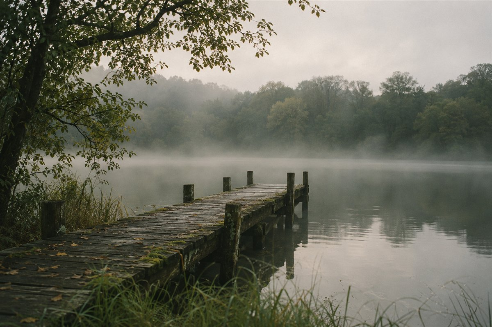

Loading entries…
An independent journal
The Common
Hours.
Essays on time, attention, and the way we live.
By Ellis Vale
An independent journal
Essays on time, attention, and the way we live.
By Ellis Vale
Loading entries…